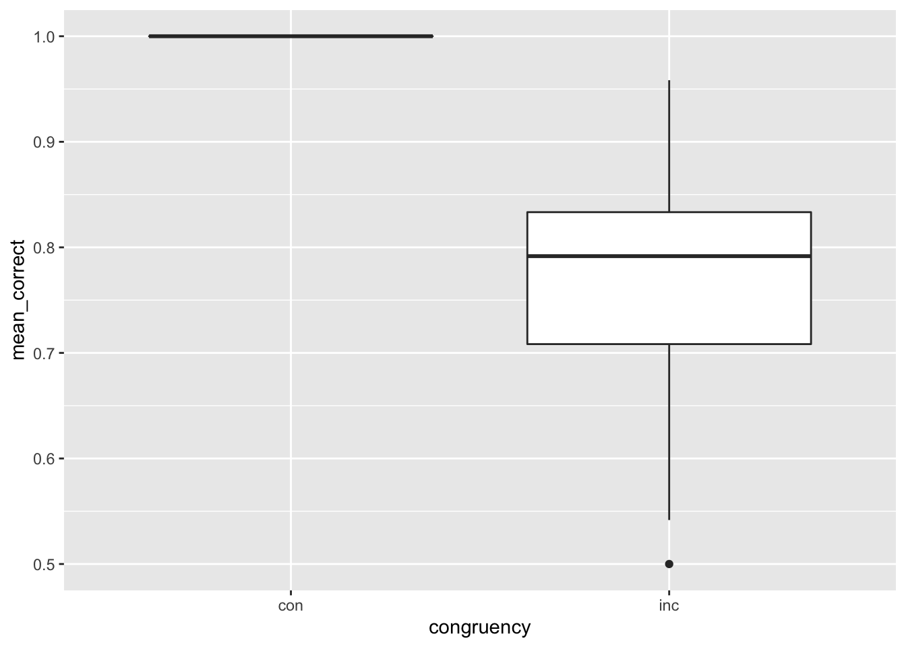

# Define Functions
# function to generate a single item
generate_item <- function(size=20,prob=c(1/3,1/3,1/3)){
item <- sample(c(1,0,-1),
size = size,
replace = TRUE,
prob = prob)
return(item)
}
# compute activations
get_activations <- function(probe,memory){
as.numeric(((probe %*% t(memory)) / rowSums(t((probe == 0) * t(memory == 0)) == 0)))
}
# generate echo
get_echo <- function(probe, mem, tau=3, output='intensity') {
activations <- get_activations(probe,mem)
if(output == "intensity"){
return(sum(activations^tau))
}
if(output == "echo"){
weighted_memory <- mem * (activations^tau)
summed_echo <- colSums(weighted_memory)
return(summed_echo)
}
if(output == "both"){
weighted_memory <- mem * (activations^tau)
summed_echo <- colSums(weighted_memory)
model_output <- list(intensity = sum(activations^tau),
echo = summed_echo)
return(model_output)
}
}
get_cosine_sim <- function(echo_features, response_matrix) {
similarity_df <- data.frame()
for(i in 1:nrow(response_matrix)){
current_sim <- cosine(echo_features, response_matrix[i, ])
similarity_df <- rbind(similarity_df, current_sim)
}
names(similarity_df) <- "similarity"
row.names(similarity_df) <- c("red", "green", "blue", "yellow")
return(similarity_df)
}library(tidyverse)── Attaching packages ─────────────────────────────────────── tidyverse 1.3.1 ──✔ ggplot2 3.3.6 ✔ purrr 0.3.4
✔ tibble 3.1.7 ✔ dplyr 1.0.9
✔ tidyr 1.2.0 ✔ stringr 1.4.0
✔ readr 2.1.2 ✔ forcats 0.5.1── Conflicts ────────────────────────────────────────── tidyverse_conflicts() ──
✖ dplyr::filter() masks stats::filter()
✖ dplyr::lag() masks stats::lag()library(lsa)Loading required package: SnowballC# Generate Stroop dataframe
congruent_items <- tibble(word = c("red","green","blue","yellow"),
color = c("red","green","blue","yellow"),
response = c("red","green","blue","yellow"),
congruency = rep("con",4))
incongruent_items <- tibble(word = c("red","red","red",
"green","green","green",
"blue","blue","blue",
"yellow","yellow","yellow"),
color = c("green","blue","yellow",
"red","blue","yellow",
"red","green","yellow",
"red","green","blue"),
response = c("green","blue","yellow",
"red","blue","yellow",
"red","green","yellow",
"red","green","blue"),
congruency = rep("inc",12))
training_trials <- congruent_items
stroop_trials <- congruent_items %>%
slice(rep(1:n(),each=3)) %>%
rbind(incongruent_items) %>%
slice(sample(1:n())) %>%
slice(rep(1:n(),each=2))
# Function for simulating multiple subjects on Stroop task
sim_multiple_stroop <- function(training, stroop, n_of_sim) {
all_sub_results <- data.frame()
for(i in 1:n_of_sim){
# Make vector representations
word <- t(replicate(4, generate_item(size=20,prob=c(1/3,1/3,1/3))))
row.names(word) <- c("red","green","blue","yellow")
color <- t(replicate(4, generate_item(size=20,prob=c(1/3,1/3,1/3))))
row.names(color) <- c("red","green","blue","yellow")
response <- t(replicate(4, generate_item(size=20,prob=c(1/3,1/3,1/3))))
row.names(response) <- c("red","green","blue","yellow")
## Trial constructor
minerva_trials <- function(df,vec_length=20){
minerva_matrix <- matrix(0,nrow = dim(df)[1],ncol=vec_length*3)
for(i in 1:dim(df)[1]){
minerva_matrix[i,] <- c(word[df[i,]$word, ], color[df[i,]$color, ], response[df[i,]$response, ])
}
return(minerva_matrix)
}
training_matrix <- minerva_trials(training)
trial_matrix <- minerva_trials(stroop)
## run model
subject_results <- data.frame()
memory <- training_matrix
for(i in 1:dim(trial_matrix)[1]){
probe <- c(trial_matrix[i,1:40],rep(0,20))
model_output <- get_echo(probe, memory, tau=3, output = "both")
similarities <- get_cosine_sim(model_output$echo[41:60], response)
memory <- rbind(memory,trial_matrix[i,])
trial_data <- data.frame(red = similarities['red', ],
green = similarities['green', ],
blue = similarities['blue', ],
yellow = similarities['yellow', ],
intensity = model_output$intensity,
max_sim = row.names(similarities)[which.max(similarities$similarity)],
max_sim_num = max(similarities),
coactivation = max(similarities)/(sum(abs(similarities))))
subject_results <- rbind(subject_results,trial_data)
}
row.names(subject_results) <- 1:dim(subject_results)[1]
## analyze data
one_sub <- cbind(stroop_trials,subject_results)
one_sub <- one_sub %>%
mutate(correct = response == max_sim)
summarized_one_sub <- one_sub %>%
group_by(congruency) %>%
summarize(mean_correct = mean(correct),
mean_max = mean(max_sim_num),
mean_coactivation = mean(coactivation))
all_sub_results <- rbind(all_sub_results, summarized_one_sub)
}
return(all_sub_results)
}# Equal number of congruent and incongruent trials
equal_sim <- sim_multiple_stroop(training_trials, stroop_trials, 100)
ggplot(equal_sim, aes(x = congruency, y = mean_max)) + geom_boxplot()
# 75% congruent and 25% incongruent trials
stroop_75_25 <- congruent_items %>%
slice(rep(1:n(),each=9)) %>%
rbind(incongruent_items) %>%
slice(sample(1:n()))
more_congruent_sim <- sim_multiple_stroop(training_trials, stroop_75_25, 100)
ggplot(more_congruent_sim, aes(x = congruency, y = mean_max)) + geom_boxplot()# 25% congruent and 75% incongruent trials
rep_incongruent <- incongruent_items %>% slice(rep(1:n(), each = 3))
stroop_25_75 <- congruent_items %>%
slice(rep(1:n(),each=3)) %>%
rbind(rep_incongruent) %>%
slice(sample(1:n()))
more_incongruent_sim <- sim_multiple_stroop(training_trials, stroop_25_75, 100)
ggplot(more_incongruent_sim, aes(x = congruency, y = mean_max)) + geom_boxplot()
Why is the Stroop effect stronger when there is an equal proportion of congruent and incongruent trials than when there are more congruent than incongruent trials?